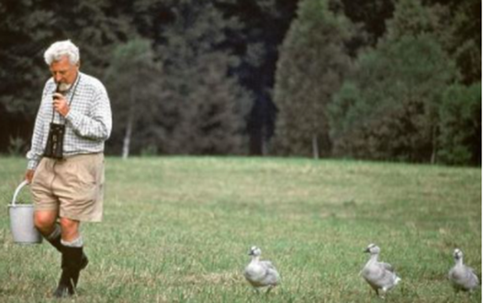
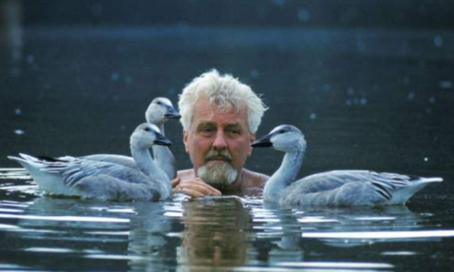
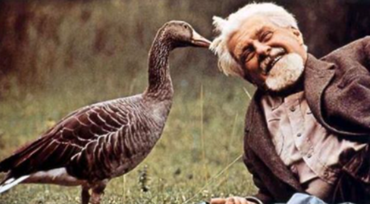

로렌츠의 생애 및 사상
로렌츠(Konrad Zacharias Lorenz, 1903~1989)는 오스트리아에서 태어났고 어려서부터 유난히 동물에 관심이 높았다. 의사인 아버지의 희망에 따라 의학공부를 하였으나, 빈 대학에서 의학보다 동물학을 연구하여 1933년 동물학 박사학위를 받았다. 1973년 틴버겐(Tinbergen), 프리츠(Pritz)와 함께 노벨 생물학상을 공동 수상하였다.
로렌츠(Lorenz)는 동물행동연구에 다윈의 진화론적 관점을 도입하여 인간행동연구에 적용시켰다. 저서로는 『진화와 행동수정(Evolution and modification of behavior, 1965)』이 대표적이다. 그는 동물의 행동에 대하여 연구하는 현대 행동학의 창시자로서 행동 양상을 통해 진화 양상을 밝혀내는 데 공헌했다. 동물에게 환경의 특정 자극이 종 특유의 행동을 유발한다는 것을 밝혀낸 후 생물학적으로 프로그램화된 몇 가지 생존기제 행동을 연구하여 새로운 차원으로 발전시켰다.

로렌츠에게 각인된 오리새끼
로렌츠(Lorenz)는 여러 종의 동물들의 행동을 관찰한 후 오리가 낳은 알을 두 집단으로 나누었다.
한 집단의 알은 어미오리가 부화하게 하고, 다른 집단의 알은 부화장에서 부화시켰다. 어미오리가 부화시킨 첫 번째 집단의 새끼오리는 예측한 대로 부화 직후부터 어미오리를 따라다녔다. 부화장에서 부화시킨 두 번째 집단의 새끼오리들은 부화하자 마자 오리 새끼 앞에서 어미 오리의 울음소리를 흉내내면 새끼들은 로렌츠를 자신의 어미라고 여기고 따르게 되었다. 로렌츠에게 각인(imprinting) 되어 어미처럼 여기고 따라 다녔다.
각인(imprinting)이란 두 번째 집단의 새끼오리처럼 생의 초기에 제한된 기간 동안 노출된 대상에게 애착이 형성되어 추종하는 행동패턴을 의미한다. 동물들의 각인된 행동은 이후 생애동안 지속적으로 나타났지만 동물 종류에 따라 대상의 범위가 각기 다르다는 것을 발견하였다. 이에 로렌츠의 각인 현상은 부화한 직후 어떤 결정적인 시기에 그들을 낳아주거나 기른 부모를 따라 배운다는 증명하였다. 즉, 출생 후 일정한 기간 내의 신체의 민감한 움직과 반응, 의사 전달의 수단 등에 관련된 결정적 시기(critical period)라는 개념을 이끌어냈다.

동물행동학적 결정적 시기
이러한 결정적 시기(critical period)란 제한된 시간 내에 특정한 행동을 습득하도록 생물학적으로 준비되어 있기 때문에 적절한 환경적 지원을 해야 한다는 것이다. 이와 같이 로렌츠의 동물행동학적 이론은 생물학적, 환경적 영향에 진화론적 견해를 더욱 확산시켜 기능적인 측면까지 관심이 증가되었다.

양육자와 안정된 애착의 중요성
인간은 출생과 동시에 아이를 돌보는 양육자에 의해서 신체발달과 인지발달 및 언어발달의 결정적 시기가 있다. 출생 초기에 외부의 자극이나 신체적 접촉 등 행동양식(울음, 웃음, 스킨쉽 등)으로 애착(attachment)이 형성된다. 아이의 행동에 잘 반응해 주는 양육자에 의해 아기는 안정된 애착에 중요한 영향을 미친다. 즉, 양육자가 자녀에게 최적의 환경과 적절한 몸짓언어(body language)는 정서적 관계를 촉진시킨다. 따라서 성장기에 따른 민감한 시기(sensitive period)가 존재한다는 가설을 뒷받침해 주었다.
2022.01.07 - [분류 전체보기] - 애착 형성 및 유형-안정 애착과 불안정 회피, 저항,혼란 애착
애착 형성 및 유형-안정 애착과 불안정 회피, 저항,혼란 애착
애착의 형성 및 유형의 의의 영아의 애착형성은 개인차를 보이는데 에인즈워스와 동료들(Ainsworth et al., 1978)는 ‘낯선 상황실험’을 실시하여 애착 유형을 나뉘었다. 이 실험 과정은 에피소드를
think-sis.tistory.com